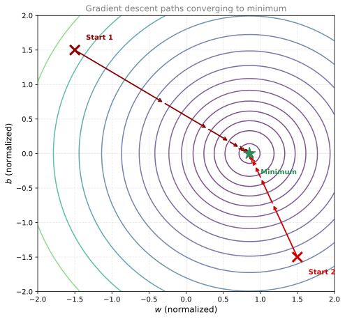
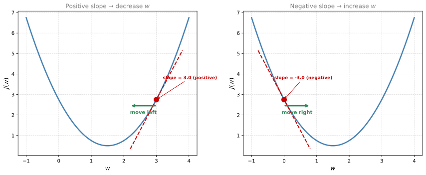
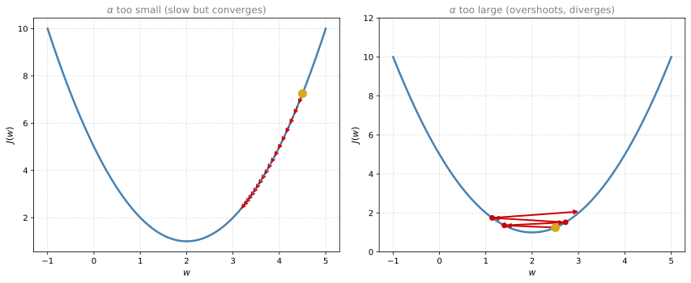
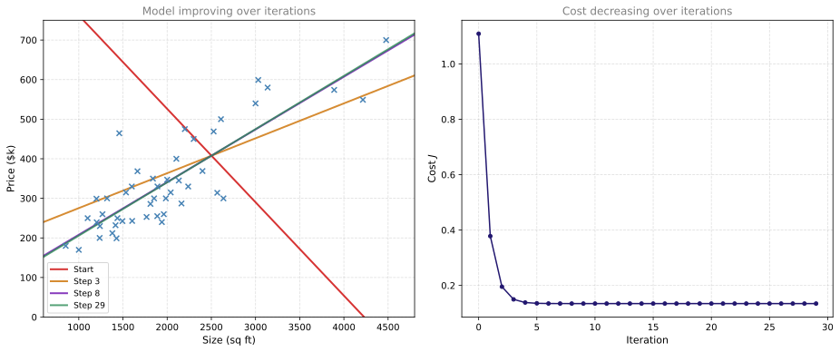
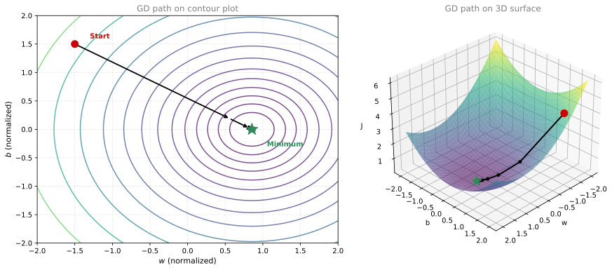
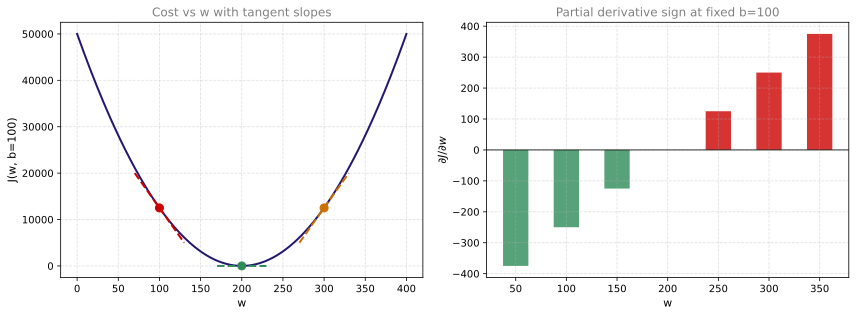
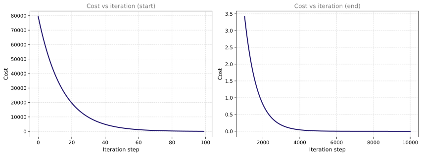
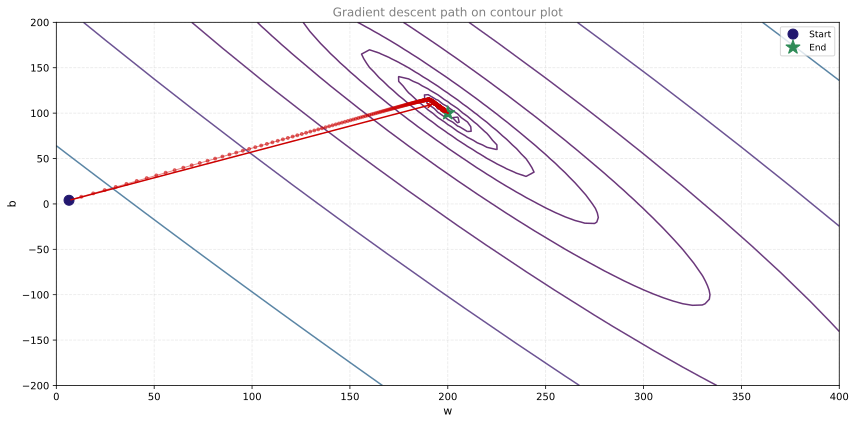
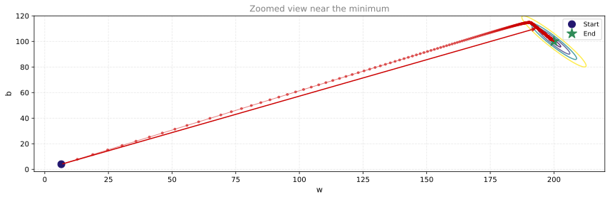
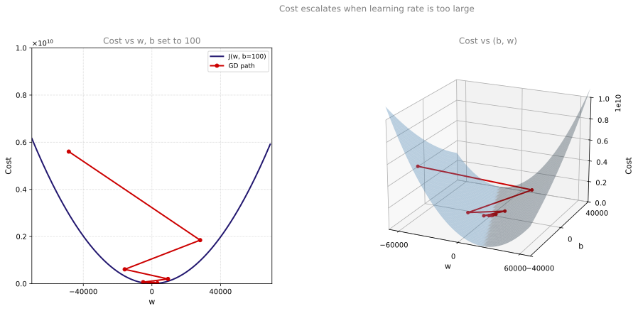

Gradient Descent
machine-learning
supervised-learning
regression
In the previous section, we visualized the cost function and saw that the goal is to find the values of and at the bottom of the bowl (where is…
Why Gradient Descent?
In the previous section, we visualized the cost function \(J(w, b)\) and saw that the goal is to find the values of \(w\) and \(b\) at the bottom of the bowl (where \(J\) is minimized). But manually searching through contour plots is not practical, especially when your model has many parameters.
We need an algorithm that automatically finds the minimum. That algorithm is gradient descent, and it is one of the most important building blocks in all of machine learning. It is used not only for linear regression, but also for training neural networks and the most advanced deep learning models.
If you have already studied gradient descent in the calculus course, this section will be a review with a machine learning perspective.
NoteWhat About Newton’s Method? (optional)
This course focuses on gradient descent, but you may wonder whether second-order methods are more important in real machine learning.
Short answer: Newton-style methods are used in practice, but they are not more common than gradient descent for training large models (especially neural networks). Gradient descent (and variants like Adam) remain the default because they scale.
Gradient descent (first-order) uses only the gradient (first derivatives). Each step asks: which direction is downhill?
\[ \theta \leftarrow \theta - \alpha \nabla J(\theta) \]
Newton’s method (second-order) also uses curvature information from second derivatives. In one variable, the update uses \(f'(x)\) and \(f''(x)\). With many parameters, that curvature is captured by the Hessian matrix.
Newton’s method can converge in fewer iterations on small, smooth problems, but each iteration is much more expensive. For \(n\) parameters, a full Hessian has \(n^2\) entries, which becomes impossible for modern deep networks with millions or billions of weights.
| Method | Typical use in ML |
|---|---|
| Gradient descent / SGD / Adam | Default for deep learning and large-scale training |
| Quasi-Newton (e.g., L-BFGS) | Some classical models with modest parameter counts (logistic regression in scikit-learn) |
| Full Newton / Hessian methods | Small convex problems, scientific computing, specialized research |
If you want the mathematical background, see the calculus course:
- Newton’s Method
- Second Derivative
- Hessian Matrix
- Newton’s Method for Multiple Variables
- Optimization in Neural Networks (compares gradient descent and Newton in a neural network context)
You do not need these topics to follow this machine learning course, but they explain what else exists beyond the algorithm taught here.
Reference: Grok-generated note (xAI). This optional note has not been fully reviewed by a subject-matter expert.
General Idea
Gradient descent is not specific to linear regression. It can minimize any differentiable function. For example, if you had a cost function \(J(w_1, w_2, \ldots, w_n, b)\) with many parameters, gradient descent can still find the minimum.
The algorithm works as follows:
- Start with initial guesses for the parameters. For linear regression, a common choice is \(w = 0\) and \(b = 0\).
- Repeat: adjust \(w\) and \(b\) a little bit in the direction that reduces \(J\) the most.
- Stop when \(J\) settles at or near a minimum (the parameters stop changing).
Hill Analogy
Imagine you are standing on a hilly landscape. The height at any point represents the cost \(J(w, b)\). Your goal is to reach the lowest valley as efficiently as possible.
At each step, you:
- Spin around 360 degrees and look in every direction
- Identify the direction of steepest descent (the direction that takes you downhill the fastest)
- Take a small step in that direction
Then you repeat from the new position: look around, find the steepest direction, step. Eventually you arrive at the bottom of a valley.
The plot above shows gradient descent on our housing prices cost function (with normalized features for balanced convergence). Both paths start from opposite corners and converge toward the same minimum (green star). This is because the squared error cost function is convex: no matter where you start, you always reach the single global minimum.
Note
The axes show normalized \(w\) and \(b\) because raw feature values (house sizes in the 1000s) make the gradients very unbalanced, causing gradient descent to converge extremely slowly. Feature scaling (normalizing the data before training) is a practical technique that makes gradient descent work much faster. You will learn more about this later in the course.
For non-convex functions (like those in neural networks), different starting points can lead to different local minima. That is a more complex topic we will revisit later in the course.
Local Minima vs Global Minimum
The bottom of each valley is called a local minimum. If the surface has multiple valleys, gradient descent may lead you to different local minima depending on your starting point.
However, for linear regression with the squared error cost function, the surface is always convex (a single bowl shape). This means there is only one minimum (the global minimum), and gradient descent will always find it regardless of where you start. This is one of the nice properties of linear regression.
Review Questions
1. What does gradient descent do at each step?
TipAnswer
At each step, it looks at the current position on the cost surface, determines the direction of steepest descent (the direction that reduces the cost the most), and takes a small step in that direction. Then it repeats from the new position.
1. What is a “local minimum”?
TipAnswer
A local minimum is the bottom of a valley on the cost surface. It is a point where the cost is lower than all nearby points, but it may not be the absolute lowest point on the entire surface (that would be the global minimum). Non-convex functions can have multiple local minima.
1. Why do we not worry about local minima when using gradient descent for linear regression?
TipAnswer
Because the squared error cost function for linear regression is convex (bowl-shaped), meaning it has only one minimum, the global minimum. There are no other local minima to get stuck in. No matter where you start, gradient descent will always converge to the same optimal solution.
Gradient Descent Update Rule
Here is the gradient descent algorithm. On each step, you update both parameters simultaneously:
\[ w \leftarrow w - \alpha \frac{\partial}{\partial w} J(w, b) \]
\[ b \leftarrow b - \alpha \frac{\partial}{\partial b} J(w, b) \]
Let us unpack what each piece means.
Assignment Operator
The \(\leftarrow\) arrow means assignment (compute the value on the right and store it into the variable on the left). In Python, this is written as w = w - alpha * dj_dw. It takes the old value of \(w\), adjusts it, and stores the result back into \(w\). We use the arrow notation in math to distinguish assignment from an equality claim (\(=\)).
Learning Rate \(\alpha\)
The Greek letter \(\alpha\) (alpha) is called the learning rate. It is a small positive number (typically between 0 and 1, for example 0.01 or 0.001) that controls how big of a step you take downhill at each iteration.
- If \(\alpha\) is large, you take aggressive steps (faster but risk overshooting)
- If \(\alpha\) is small, you take tiny baby steps (safer but slower)
Choosing a good learning rate is important. See Checking Convergence and Choosing Learning Rate for a practical workflow.
Derivative Term
The derivative term \(\dfrac{\partial}{\partial w} J(w, b)\) is the partial derivative of the cost function with respect to \(w\). You can think of it as telling you:
- Which direction to step (positive derivative means \(w\) is too large, so decrease it)
- How big of a step to take (larger derivative means steeper slope, so the step is bigger)
If you have studied partial derivatives in the calculus course, you already know how to compute these. If not, do not worry. We will derive the specific formulas for linear regression in the next section.
Simultaneous Update
A critical detail: you must update \(w\) and \(b\) simultaneously. This means you compute both new values first, then assign them:
# Correct: simultaneous update
temp_w = w - alpha * dj_dw
temp_b = b - alpha * dj_db
w = temp_w
b = temp_bThe incorrect approach would be to update \(w\) first and then use the new \(w\) when computing the update for \(b\):
# Incorrect: sequential update
w = w - alpha * dj_dw # w is now changed!
b = b - alpha * dj_db # this uses the NEW w, not the old oneThe difference matters because the derivative for \(b\) should be computed using the old value of \(w\) (before the update), not the new one. Always use simultaneous updates.
Review Questions
1. What does the learning rate \(\alpha\) control?
TipAnswer
It controls the size of each step in gradient descent. A larger \(\alpha\) means bigger steps (faster convergence but risk of overshooting). A smaller \(\alpha\) means smaller steps (slower but more careful convergence).
1. Why must \(w\) and \(b\) be updated simultaneously?
TipAnswer
Because the derivative for \(b\) should be computed using the original (pre-update) value of \(w\). If you update \(w\) first and then compute the derivative for \(b\), you are using a changed \(w\), which gives you a different (incorrect) gradient. Simultaneous update ensures both derivatives are computed at the same point \((w, b)\).
1. What does the derivative term tell the algorithm?
\[ \frac{\partial}{\partial w} J(w, b) \]
TipAnswer
It tells the algorithm two things: (1) the direction to move \(w\) (if the derivative is positive, \(w\) should decrease; if negative, \(w\) should increase), and (2) how much to move (a steeper slope means a larger adjustment).
1. What does the following update statement do? (Assume \(\alpha\) is small.)
\[ w \leftarrow w - \alpha \frac{\partial J(w,b)}{\partial w} \]
- Updates parameter \(w\) by a small amount
- Checks whether \(w\) is equal to \(w - \alpha \dfrac{\partial J(w,b)}{\partial w}\)
TipAnswer
a. This updates the parameter \(w\) by a small amount, in order to reduce the cost \(J\). The arrow (\(\leftarrow\)) is an assignment, not an equality check.
Derivative Intuition
To understand why gradient descent works, let us simplify to one parameter. Consider minimizing \(J(w)\) (with \(b = 0\)). The update rule is:
\[ w \leftarrow w - \alpha \frac{d}{dw} J(w) \]
The derivative \(\frac{d}{dw} J(w)\) is the slope of the tangent line at the current point on the cost curve. If you have studied derivatives in the calculus course, this will be familiar.

Here is why it works in both cases:
Starting to the right of the minimum (left plot): The tangent line slopes upward (positive derivative). The update \(w \leftarrow w - \alpha \times (\text{positive number})\) makes \(w\) smaller, moving left toward the minimum.
Starting to the left of the minimum (right plot): The tangent line slopes downward (negative derivative). The update \(w \leftarrow w - \alpha \times (\text{negative number})\) is the same as adding a positive number to \(w\), moving right toward the minimum.
In both cases, gradient descent automatically moves \(w\) in the correct direction. The derivative’s sign ensures you always head downhill.
Review Questions
1. If the derivative of \(J(w)\) at the current \(w\) is positive, which direction does gradient descent move \(w\)?
TipAnswer
It decreases \(w\) (moves left). The update is \(w \leftarrow w - \alpha \times (\text{positive})\), which makes \(w\) smaller.
1. If you are already at the minimum of \(J(w)\), what is the derivative, and what happens to \(w\)?
TipAnswer
At the minimum, the derivative is zero (the tangent line is flat). The update becomes \(w \leftarrow w - \alpha \times 0 = w\). So \(w\) does not change, and gradient descent stays at the minimum.
1. Gradient descent is an algorithm for finding values of parameters \(w\) and \(b\) that minimize the cost function \(J\).
\[ \text{repeat until convergence: } \begin{cases} w \leftarrow w - \alpha \dfrac{\partial J(w,b)}{\partial w} \\[8pt] b \leftarrow b - \alpha \dfrac{\partial J(w,b)}{\partial b} \end{cases} \]
Assume the learning rate \(\alpha\) is a small positive number. When the partial derivative is positive (greater than zero):
\[ \frac{\partial J(w,b)}{\partial w} > 0 \]
What happens to \(w\) after one update step?
- It is not possible to tell if \(w\) will increase or decrease
- \(w\) stays the same
- \(w\) decreases
- \(w\) increases
TipAnswer
c. \(w\) decreases. The learning rate \(\alpha\) is always positive, so the update \(w \leftarrow w - \alpha \times (\text{positive number})\) subtracts a positive value from \(w\), making it smaller.
Learning Rate
The learning rate \(\alpha\) has a huge impact on gradient descent. If chosen poorly, gradient descent may not work at all. If you have covered this topic in the calculus course, this will serve as a reinforcement.
\(\alpha\) Too Small
If the learning rate is very small (like 0.0000001), you multiply the derivative by a tiny number, so each step is minuscule. Gradient descent still works (the cost decreases), but it takes an extremely long time to reach the minimum because you are taking tiny baby steps.
\(\alpha\) Too Large
If the learning rate is too large, you can overshoot the minimum. Instead of getting closer, you jump over the minimum to the other side, landing at a point with even higher cost. On the next step you overshoot again, even further. The cost keeps increasing and gradient descent diverges (fails to converge).

What Happens at a Local Minimum?
If \(w\) is already at a local minimum, the tangent line is flat (slope = 0), so the derivative is zero. The update becomes:
\[ w \leftarrow w - \alpha \times 0 = w \]
Gradient descent leaves \(w\) unchanged, which is exactly what you want. The algorithm stays at the minimum.
Why Steps Automatically Get Smaller
An important property: even with a fixed learning rate \(\alpha\), gradient descent naturally takes smaller steps as it approaches the minimum. This is because:
- Near the minimum, the slope (derivative) is small
- The step size is \(\alpha \times \text{derivative}\)
- A smaller derivative means a smaller step
So gradient descent naturally slows down and settles at the minimum without needing to manually reduce \(\alpha\).
Review Questions
1. What happens if the learning rate \(\alpha\) is too large?
TipAnswer
Gradient descent overshoots the minimum. Each step jumps too far, landing on the other side at a higher cost. The algorithm can diverge (cost keeps increasing) and never reach the minimum.
1. If you are already at a local minimum, what does one step of gradient descent do?
TipAnswer
Nothing. At a local minimum, the derivative is zero, so the update is \(w \leftarrow w - \alpha \times 0 = w\). The parameter stays at the same value.
1. Why can gradient descent reach a minimum even though the learning rate \(\alpha\) stays fixed (does not decrease)?
TipAnswer
Because the derivative automatically gets smaller as you approach the minimum. Since the step size is \(\alpha \times \text{derivative}\), smaller derivatives mean smaller steps. Gradient descent naturally takes tinier steps near the minimum, even with a constant \(\alpha\).
Gradient Descent for Linear Regression
Now we bring everything together: the linear regression model, the squared error cost function, and the gradient descent algorithm.
Model: \(f_{w,b}(x) = wx + b\)
Cost function: \(J(w,b) = \frac{1}{2m}\sum_{i=1}^{m}(f_{w,b}(x^{(i)}) - y^{(i)})^2\)
Gradient descent update:
\[ \text{repeat until convergence: } \begin{cases} w \leftarrow w - \alpha \dfrac{\partial J(w,b)}{\partial w} \\[8pt] b \leftarrow b - \alpha \dfrac{\partial J(w,b)}{\partial b} \end{cases} \]
Derivative Formulas
When you compute the partial derivatives of the squared error cost function, you get:
\[ \frac{\partial J(w,b)}{\partial w} = \frac{1}{m}\sum_{i=1}^{m}(f_{w,b}(x^{(i)}) - y^{(i)}) \cdot x^{(i)} \]
\[ \frac{\partial J(w,b)}{\partial b} = \frac{1}{m}\sum_{i=1}^{m}(f_{w,b}(x^{(i)}) - y^{(i)}) \]
Notice that both formulas look similar. The difference is that the derivative with respect to \(w\) has an extra \(x^{(i)}\) multiplied at the end.
These formulas say: for each training example, compute the error (\(\text{prediction} - \text{actual}\)), multiply by \(x^{(i)}\) (for the \(w\) derivative), and average over all \(m\) examples.
NoteDerivation (optional, uses calculus)
If you have studied the derivative rules in the calculus course, here is where these formulas come from.
Starting with:
\[ \frac{\partial}{\partial w} J(w,b) = \frac{\partial}{\partial w} \left[\frac{1}{2m}\sum_{i=1}^{m}(wx^{(i)} + b - y^{(i)})^2\right] \]
Applying the chain rule, the derivative of \((wx^{(i)} + b - y^{(i)})^2\) with respect to \(w\) is \(2(wx^{(i)} + b - y^{(i)}) \cdot x^{(i)}\). The factor of 2 cancels with the \(\frac{1}{2m}\) in front, leaving:
\[ \frac{\partial J}{\partial w} = \frac{1}{m}\sum_{i=1}^{m}(wx^{(i)} + b - y^{(i)}) \cdot x^{(i)} \]
Similarly, for \(b\), the derivative of \((wx^{(i)} + b - y^{(i)})^2\) with respect to \(b\) is \(2(wx^{(i)} + b - y^{(i)}) \cdot 1\), giving:
\[ \frac{\partial J}{\partial b} = \frac{1}{m}\sum_{i=1}^{m}(wx^{(i)} + b - y^{(i)}) \]
This is why we defined the cost function with the factor of \(\frac{1}{2}\). It cancels with the 2 from the power rule, making the gradient formulas cleaner.
Complete Algorithm
Putting it all together, the gradient descent algorithm for linear regression is:
\[ \text{repeat until convergence: } \begin{cases} w \leftarrow w - \alpha \cdot \dfrac{1}{m}\sum_{i=1}^{m}(f_{w,b}(x^{(i)}) - y^{(i)}) \cdot x^{(i)} \\[10pt] b \leftarrow b - \alpha \cdot \dfrac{1}{m}\sum_{i=1}^{m}(f_{w,b}(x^{(i)}) - y^{(i)}) \end{cases} \]
where \(f_{w,b}(x^{(i)}) = wx^{(i)} + b\), and \(w\) and \(b\) are updated simultaneously on each step.
Convexity Guarantee
Recall from the cost function section that the squared error cost function for linear regression is convex (bowl-shaped). This means:
- There is only one global minimum (no local minima to get stuck in)
- As long as the learning rate \(\alpha\) is chosen appropriately, gradient descent will always converge to this global minimum
- The starting values of \(w\) and \(b\) do not matter (a common choice is \(w = 0\), \(b = 0\))
This is a significant advantage of linear regression. For more complex models (like neural networks), the cost function is not convex, and gradient descent may converge to different local minima depending on the initialization.
Review Questions
1. What is the difference between the derivative of \(J\) with respect to \(w\) versus with respect to \(b\)?
TipAnswer
The formula for \(\frac{\partial J}{\partial w}\) multiplies each error term by \(x^{(i)}\) (the input feature), while the formula for \(\frac{\partial J}{\partial b}\) does not. This is because \(w\) is multiplied by \(x\) in the model (\(wx + b\)), so the chain rule introduces the extra \(x^{(i)}\) factor.
1. Why does the \(\frac{1}{2}\) in the cost function definition make the derivative formulas cleaner?
TipAnswer
When you differentiate the squared term \((...)^2\), the power rule brings down a factor of 2. The \(\frac{1}{2}\) in front of the cost function cancels with this 2, so the final gradient formula has just \(\frac{1}{m}\) instead of \(\frac{2}{2m}\). It is purely a convenience.
1. Why do we not worry about local minima when running gradient descent for linear regression?
TipAnswer
Because the squared error cost function for linear regression is convex (bowl-shaped). A convex function has exactly one minimum (the global minimum) and no local minima. Gradient descent is guaranteed to find it.
Running Gradient Descent
Let us see gradient descent in action on our housing dataset. We initialize \(w = -0.1\) and \(b = 900\) (a bad starting line that slopes downward), then run gradient descent and watch the line improve:

The left plot shows how the line evolves from a terrible fit (red, start) to increasingly better fits (orange, purple) until it reaches the best fit (green). The right plot shows the cost \(J\) decreasing with each iteration of gradient descent, eventually flattening out when it reaches the minimum.
Think of it this way: you start with a random line that makes terrible predictions. Then gradient descent nudges \(w\) and \(b\) a little bit at a time, making the line fit slightly better on each step. After enough steps, the line settles into the position that best fits the data. The cost curve shows this improvement as a number: high at the start (bad fit), dropping quickly at first, then flattening out when the line cannot improve any further.
Below you can see the same gradient descent journey on the contour plot and the 3D cost surface. The path traces from the starting point (gold) down to the minimum (green star):

On the contour plot (left), the red arrows spiral inward from the starting point toward the center (minimum). On the 3D surface (right), the red path rolls downhill from a high point to the bottom of the bowl. Both views show the same journey: gradient descent finding the best parameters step by step.
Batch Gradient Descent
The version of gradient descent we have been using is called batch gradient descent. “Batch” means that on every single step, we look at all \(m\) training examples (the entire batch) when computing the derivatives: $$
There are other variants of gradient descent that look at smaller subsets of the data on each step (called mini-batch gradient descent or stochastic gradient descent). These are useful for very large datasets and will appear later in the course.
Summary
Congratulations. You have now learned a complete machine learning algorithm:
- Model: \(f_{w,b}(x) = wx + b\) (linear regression)
- Cost function: \(J(w,b) = \frac{1}{2m}\sum(f_{w,b}(x^{(i)}) - y^{(i)})^2\) (squared error)
- Optimization: Gradient descent (repeatedly update \(w\) and \(b\) to minimize \(J\))
This gives you a working system that can learn from data and make predictions.
Review Questions
1. What does “batch” mean in batch gradient descent?
TipAnswer
“Batch” means that each step of gradient descent uses all \(m\) training examples to compute the gradient (the sum goes from \(i = 1\) to \(m\)). The entire training set is used on every iteration, as opposed to variants that use only a subset.
1. Looking at the cost curve (right plot), what does it mean when the curve flattens out?
TipAnswer
It means gradient descent has converged (or is very close to converging). The cost is no longer decreasing significantly, which indicates the parameters \(w\) and \(b\) are at or very near the minimum. Further iterations produce negligible improvement.
Lab: Gradient Descent for Linear Regression
In this lab, you will implement gradient descent in Python and use it to automatically find the best values of \(w\) and \(b\). You will use the simple two-house dataset from earlier labs so you can see exactly what the algorithm is doing.
Goals
In this lab, you will:
- implement
compute_gradientandgradient_descentin Python - visualize what the gradient (slope of the cost) tells us at different points
- run gradient descent to find optimal parameters
- plot the cost over iterations and the path on a contour map
- see what happens when the learning rate is too large
Setup
We need three Python libraries:
- NumPy for arrays and math
- Matplotlib for plotting
- math for helper functions used in the gradient descent loop
import math
import numpy as np
import matplotlib.pyplot as pltTraining Data
We use the same two data points from the previous labs:
| Size (1000 sqft) | Price ($1000s) |
|---|---|
| 1.0 | 300 |
| 2.0 | 500 |
x_train = np.array([1.0, 2.0]) # size in 1000 sqft
y_train = np.array([300.0, 500.0]) # price in $1000s
print(f"x_train = {x_train}")
print(f"y_train = {y_train}")x_train = [1. 2.]
y_train = [300. 500.]Each row is one training example. The input feature is house size, and the target is price.
Implementing compute_cost
We already built this function in the cost function lab. We need it again here because gradient descent checks the cost after every update.
def compute_cost(x, y, w, b):
"""
Computes the cost function for linear regression.
Args:
x (ndarray (m,)): input data (m examples)
y (ndarray (m,)): target values
w, b (scalar): model parameters
Returns:
total_cost (float): the cost J(w, b)
"""
m = x.shape[0]
cost = 0
for i in range(m):
f_wb = w * x[i] + b
cost = cost + (f_wb - y[i]) ** 2
total_cost = (1 / (2 * m)) * cost
return total_cost
# Quick check at w=0, b=0 (bad starting guess)
print(f"Cost at w=0, b=0: {compute_cost(x_train, y_train, 0, 0):.1f}")Cost at w=0, b=0: 85000.0The loop computes the squared error for each example, then divides by \(2m\) to get the average cost.
Implementing compute_gradient
Gradient descent needs the partial derivatives of the cost with respect to \(w\) and \(b\). For linear regression, the formulas are:
\[ \frac{\partial J(w,b)}{\partial w} = \frac{1}{m} \sum_{i=0}^{m-1} (f_{w,b}(x^{(i)}) - y^{(i)}) \cdot x^{(i)} \]
\[ \frac{\partial J(w,b)}{\partial b} = \frac{1}{m} \sum_{i=0}^{m-1} (f_{w,b}(x^{(i)}) - y^{(i)}) \]
In Python, we loop over each training example, compute the prediction error, and accumulate the terms. The variable names dj_dw and dj_db follow the course convention (\(\partial J / \partial w\) and \(\partial J / \partial b\)).
def compute_gradient(x, y, w, b):
"""
Computes the gradient for linear regression.
Args:
x (ndarray (m,)): Data, m examples
y (ndarray (m,)): target values
w, b (scalar): model parameters
Returns:
dj_dw (scalar): gradient of cost w.r.t. w
dj_db (scalar): gradient of cost w.r.t. b
"""
m = x.shape[0]
dj_dw = 0
dj_db = 0
for i in range(m):
f_wb = w * x[i] + b
dj_dw_i = (f_wb - y[i]) * x[i]
dj_db_i = f_wb - y[i]
dj_db += dj_db_i
dj_dw += dj_dw_i
dj_dw = dj_dw / m
dj_db = dj_db / m
return dj_dw, dj_db
# Quick check at w=0, b=0
dw, db = compute_gradient(x_train, y_train, 0, 0)
print(f"At w=0, b=0: dj_dw = {dw:.3f}, dj_db = {db:.3f}")At w=0, b=0: dj_dw = -650.000, dj_db = -400.000Visualizing the Gradient
Before running the full algorithm, let us see what the gradient looks like. The plot below fixes \(b = 100\) and shows the cost curve \(J(w, b=100)\). At three different values of \(w\), the dashed tangent lines show the slope (the partial derivative \(\partial J / \partial w\)).
- If the slope is positive, increasing \(w\) increases the cost (we should decrease \(w\)).
- If the slope is negative, increasing \(w\) decreases the cost (we should increase \(w\)).
- At the minimum, the slope is zero.
%config InlineBackend.figure_formats = ['svg']
def plot_gradients(x, y, compute_cost, compute_gradient, b_fixed=100):
"""Plot cost vs w with tangent slopes (replicates course plt_gradients)."""
w_vals = np.linspace(0, 400, 200)
costs = [compute_cost(x, y, w, b_fixed) for w in w_vals]
fig, axes = plt.subplots(1, 2, figsize=(12, 4.5))
axes[0].plot(w_vals, costs, color='#22176F', linewidth=2)
w_points = [100, 200, 300]
colors = ['#CC0000', '#2E8B57', '#CC7000']
for w_pt, col in zip(w_points, colors):
c = compute_cost(x, y, w_pt, b_fixed)
dj_dw, _ = compute_gradient(x, y, w_pt, b_fixed)
tangent_x = np.array([w_pt - 30, w_pt + 30])
tangent_y = c + dj_dw * (tangent_x - w_pt)
axes[0].plot(tangent_x, tangent_y, color=col, linewidth=2, linestyle='--')
axes[0].plot(w_pt, c, 'o', color=col, markersize=8)
axes[0].set_xlabel('w', fontsize=11)
axes[0].set_ylabel(f'J(w, b={b_fixed})', fontsize=11)
axes[0].set_title('Cost vs w with tangent slopes', fontsize=12, color='gray')
axes[0].grid(linestyle='--', alpha=0.4)
w_test = np.linspace(50, 350, 7)
slopes = [compute_gradient(x, y, w, b_fixed)[0] for w in w_test]
bar_colors = ['#CC0000' if s > 0 else '#2E8B57' for s in slopes]
axes[1].bar(w_test, slopes, width=25, color=bar_colors, alpha=0.8)
axes[1].axhline(0, color='black', linewidth=0.8)
axes[1].set_xlabel('w', fontsize=11)
axes[1].set_ylabel(r'$\partial J / \partial w$', fontsize=11)
axes[1].set_title('Partial derivative sign at fixed b=100', fontsize=12, color='gray')
axes[1].grid(linestyle='--', alpha=0.4)
plt.tight_layout()
plt.show()
plot_gradients(x_train, y_train, compute_cost, compute_gradient)
On the left, the bowl-shaped curve shows that the slope always points toward the bottom. On the right, the bars show whether the derivative is positive (red) or negative (green) at each \(w\) value. Gradient descent uses both \(\partial J / \partial w\) and \(\partial J / \partial b\) together to roll downhill in two dimensions.
Implementing gradient_descent
Now we put everything together. The gradient_descent function repeats these steps num_iters times:
- Compute the gradient with
compute_gradient - Update \(w\) and \(b\) using \(w := w - \alpha \cdot \partial J / \partial w\) and \(b := b - \alpha \cdot \partial J / \partial b\)
- Record the cost and parameters for plotting later
The function prints progress about 10 times during the run so you can watch the cost drop. The cell below defines the function and then runs it. The printed output appears below the code block after rendering.
def gradient_descent(x, y, w_in, b_in, alpha, num_iters, cost_function, gradient_function):
"""
Performs gradient descent to fit w, b.
Args:
x (ndarray (m,)): Data, m examples
y (ndarray (m,)): target values
w_in, b_in (scalar): initial parameter values
alpha (float): learning rate
num_iters (int): number of iterations
cost_function: function to compute J(w, b)
gradient_function: function to compute partial derivatives
Returns:
w, b: final parameter values
J_history: list of cost values at each iteration
p_history: list of [w, b] pairs at each iteration
"""
J_history = []
p_history = []
w = w_in
b = b_in
for i in range(num_iters):
dj_dw, dj_db = gradient_function(x, y, w, b)
b = b - alpha * dj_db
w = w - alpha * dj_dw
J_history.append(cost_function(x, y, w, b))
p_history.append([w, b])
if i % math.ceil(num_iters / 10) == 0:
print(f"Iteration {i:4d}: Cost {J_history[-1]:.2e}, "
f"dj_dw: {dj_dw: .3e}, dj_db: {dj_db: .3e}, "
f"w: {w: .3e}, b: {b: .3e}")
return w, b, J_history, p_history
# Run gradient descent: start from w=0, b=0, alpha=0.01, 10000 iterations
w_init = 0
b_init = 0
iterations = 10000
tmp_alpha = 1.0e-2
w_final, b_final, J_hist, p_hist = gradient_descent(
x_train, y_train, w_init, b_init, tmp_alpha,
iterations, compute_cost, compute_gradient)
print(f"\n(w, b) found by gradient descent: ({w_final:8.4f}, {b_final:8.4f})")Iteration 0: Cost 7.93e+04, dj_dw: -6.500e+02, dj_db: -4.000e+02, w: 6.500e+00, b: 4.000e+00
Iteration 1000: Cost 3.41e+00, dj_dw: -3.712e-01, dj_db: 6.007e-01, w: 1.949e+02, b: 1.082e+02
Iteration 2000: Cost 7.93e-01, dj_dw: -1.789e-01, dj_db: 2.895e-01, w: 1.975e+02, b: 1.040e+02
Iteration 3000: Cost 1.84e-01, dj_dw: -8.625e-02, dj_db: 1.396e-01, w: 1.988e+02, b: 1.019e+02
Iteration 4000: Cost 4.28e-02, dj_dw: -4.158e-02, dj_db: 6.727e-02, w: 1.994e+02, b: 1.009e+02
Iteration 5000: Cost 9.95e-03, dj_dw: -2.004e-02, dj_db: 3.243e-02, w: 1.997e+02, b: 1.004e+02
Iteration 6000: Cost 2.31e-03, dj_dw: -9.660e-03, dj_db: 1.563e-02, w: 1.999e+02, b: 1.002e+02
Iteration 7000: Cost 5.37e-04, dj_dw: -4.657e-03, dj_db: 7.535e-03, w: 1.999e+02, b: 1.001e+02
Iteration 8000: Cost 1.25e-04, dj_dw: -2.245e-03, dj_db: 3.632e-03, w: 2.000e+02, b: 1.000e+02
Iteration 9000: Cost 2.90e-05, dj_dw: -1.082e-03, dj_db: 1.751e-03, w: 2.000e+02, b: 1.000e+02
(w, b) found by gradient descent: (199.9929, 100.0116)Running Gradient Descent
We started from \(w = 0\) and \(b = 0\) (a flat line through the origin) and ran 10,000 iterations with learning rate \(\alpha = 0.01\). The output cell above shows the cost dropping at each checkpoint.
You should see the cost start large and drop rapidly, then slow down as the algorithm approaches the minimum. The final values should be close to \(w \approx 200\) and \(b \approx 100\), which we already know is the perfect fit for this dataset.
Notice that the partial derivatives dj_dw and dj_db also shrink as we get closer to the bottom of the bowl. Near the minimum, the steps become smaller automatically because the slopes are smaller.
Cost vs Iterations
A plot of cost versus iteration is one of the best ways to check that gradient descent is working. Cost should always decrease in a successful run. Because the cost drops so fast at the beginning, we plot the first 100 iterations and the later iterations on separate axes with different scales:
%config InlineBackend.figure_formats = ['svg']
fig, (ax1, ax2) = plt.subplots(1, 2, figsize=(12, 4.5))
ax1.plot(J_hist[:100], color='#22176F', linewidth=2)
ax1.set_title('Cost vs iteration (start)', fontsize=12, color='gray')
ax1.set_ylabel('Cost', fontsize=11)
ax1.set_xlabel('Iteration step', fontsize=11)
ax1.grid(linestyle='--', alpha=0.4)
ax2.plot(1000 + np.arange(len(J_hist[1000:])), J_hist[1000:],
color='#22176F', linewidth=2)
ax2.set_title('Cost vs iteration (end)', fontsize=12, color='gray')
ax2.set_ylabel('Cost', fontsize=11)
ax2.set_xlabel('Iteration step', fontsize=11)
ax2.grid(linestyle='--', alpha=0.4)
plt.tight_layout()
plt.show()
The left plot shows the steep drop at the start. The right plot zooms in on the tail, where the cost flattens out near zero as the algorithm converges.
Making Predictions
Now that gradient descent found the best parameters, we can predict prices for new houses. The model computes \(f_{w,b}(x) = wx + b\):
print(f"1000 sqft house prediction: ${w_final * 1.0 + b_final:.1f} thousand dollars")
print(f"1200 sqft house prediction: ${w_final * 1.2 + b_final:.1f} thousand dollars")
print(f"2000 sqft house prediction: ${w_final * 2.0 + b_final:.1f} thousand dollars")1000 sqft house prediction: $300.0 thousand dollars
1200 sqft house prediction: $340.0 thousand dollars
2000 sqft house prediction: $500.0 thousand dollarsThe predictions for 1000 sqft and 2000 sqft should match the training data ($300k and $500k). The 1200 sqft prediction ($340k) is a new value that the model has never seen before.
Gradient Descent on Contour Plot
We can visualize the entire journey on a contour plot of \(J(w, b)\). Each ring is a different cost level, and the red arrows show the path gradient descent took from the start (blue dot) to the minimum (green star):
%config InlineBackend.figure_formats = ['svg']
def plot_contour_wgrad(x, y, p_hist, ax, w_range=None, b_range=None, contour_levels=None):
"""Contour plot with gradient descent path (replicates course plt_contour_wgrad)."""
if w_range is None:
w_range = [0, 400, 5]
if b_range is None:
b_range = [-200, 200, 5]
w_vals = np.arange(w_range[0], w_range[1] + w_range[2], w_range[2])
b_vals = np.arange(b_range[0], b_range[1] + b_range[2], b_range[2])
W, B = np.meshgrid(w_vals, b_vals)
J = np.zeros_like(W)
for i in range(W.shape[0]):
for j in range(W.shape[1]):
J[i, j] = compute_cost(x, y, W[i, j], B[i, j])
if contour_levels is None:
levels = np.logspace(np.log10(max(J.min(), 1)), np.log10(J.max()), 12)
else:
levels = contour_levels
ax.contour(W, B, J, levels=levels, cmap='viridis', alpha=0.8)
path = np.array(p_hist)
step = max(1, len(path) // 15)
for i in range(0, len(path) - step, step):
ax.annotate('', xy=(path[i + step, 0], path[i + step, 1]),
xytext=(path[i, 0], path[i, 1]),
arrowprops=dict(arrowstyle='->', color='#CC0000', lw=1.5))
ax.plot(path[:, 0], path[:, 1], 'o-', color='#CC0000', markersize=3,
linewidth=1, alpha=0.5)
ax.plot(path[0, 0], path[0, 1], 'o', color='#22176F', markersize=10, label='Start')
ax.plot(path[-1, 0], path[-1, 1], '*', color='#2E8B57', markersize=15, label='End')
ax.set_xlabel('w', fontsize=11)
ax.set_ylabel('b', fontsize=11)
ax.legend(fontsize=9)
ax.grid(linestyle='--', alpha=0.3)
fig, ax = plt.subplots(1, 1, figsize=(12, 6))
plot_contour_wgrad(x_train, y_train, p_hist, ax)
ax.set_title('Gradient descent path on contour plot', fontsize=12, color='gray')
plt.tight_layout()
plt.show()
The path makes steady progress toward the center of the bowl. The early arrows are longer (bigger steps) and the later arrows are shorter as the gradient approaches zero.
Zooming In on Final Steps
If we zoom in near the minimum, you can see that the step size shrinks as gradient descent gets close to the goal:
%config InlineBackend.figure_formats = ['svg']
fig, ax = plt.subplots(1, 1, figsize=(12, 4))
plot_contour_wgrad(x_train, y_train, p_hist, ax,
w_range=[180, 220, 0.5], b_range=[80, 120, 0.5],
contour_levels=[1, 5, 10, 20])
ax.set_title('Zoomed view near the minimum', fontsize=12, color='gray')
plt.tight_layout()
plt.show()
The distance between consecutive steps gets smaller and smaller. This is exactly what we want: big steps when we are far from the answer, tiny steps when we are close.
Learning Rate Too Large
In lecture, we learned that a larger learning rate \(\alpha\) makes gradient descent converge faster, but if \(\alpha\) is too large, the algorithm can diverge (bounce back and forth and the cost increases instead of decreasing).
Let us try \(\alpha = 0.8\) with only 10 iterations:
w_init = 0
b_init = 0
iterations = 10
tmp_alpha = 8.0e-1
w_bad, b_bad, J_hist_bad, p_hist_bad = gradient_descent(
x_train, y_train, w_init, b_init, tmp_alpha,
iterations, compute_cost, compute_gradient)Iteration 0: Cost 2.58e+05, dj_dw: -6.500e+02, dj_db: -4.000e+02, w: 5.200e+02, b: 3.200e+02
Iteration 1: Cost 7.82e+05, dj_dw: 1.130e+03, dj_db: 7.000e+02, w: -3.840e+02, b: -2.400e+02
Iteration 2: Cost 2.37e+06, dj_dw: -1.970e+03, dj_db: -1.216e+03, w: 1.192e+03, b: 7.328e+02
Iteration 3: Cost 7.19e+06, dj_dw: 3.429e+03, dj_db: 2.121e+03, w: -1.551e+03, b: -9.638e+02
Iteration 4: Cost 2.18e+07, dj_dw: -5.974e+03, dj_db: -3.691e+03, w: 3.228e+03, b: 1.989e+03
Iteration 5: Cost 6.62e+07, dj_dw: 1.040e+04, dj_db: 6.431e+03, w: -5.095e+03, b: -3.156e+03
Iteration 6: Cost 2.01e+08, dj_dw: -1.812e+04, dj_db: -1.120e+04, w: 9.402e+03, b: 5.802e+03
Iteration 7: Cost 6.09e+08, dj_dw: 3.156e+04, dj_db: 1.950e+04, w: -1.584e+04, b: -9.801e+03
Iteration 8: Cost 1.85e+09, dj_dw: -5.496e+04, dj_db: -3.397e+04, w: 2.813e+04, b: 1.737e+04
Iteration 9: Cost 5.60e+09, dj_dw: 9.572e+04, dj_db: 5.916e+04, w: -4.845e+04, b: -2.996e+04You should see the cost increasing and \(w\) bouncing between positive and negative values. The partial derivatives change sign each step, which is a clear sign that the learning rate is too large.
%config InlineBackend.figure_formats = ['svg']
def plot_divergence(p_hist, J_hist, x, y):
"""Show diverging gradient descent (replicates course plt_divergence)."""
from matplotlib.ticker import MaxNLocator, ScalarFormatter
path_w = np.array([p[0] for p in p_hist])
path_b = np.array([p[1] for p in p_hist])
path_j = np.array(J_hist)
fig = plt.figure(figsize=(15, 6))
gs = fig.add_gridspec(1, 2, width_ratios=[2, 3], left=0.05, right=0.88, wspace=0.12)
fig.suptitle('Cost escalates when learning rate is too large', fontsize=12, color='gray', y=1.02)
# Left: cost vs w with b fixed at 100
ax0 = fig.add_subplot(gs[0])
fix_b = 100
w_array = np.arange(-70000, 70000, 1000)
cost_curve = np.array([compute_cost(x, y, w, fix_b) for w in w_array])
ax0.plot(w_array, cost_curve, color='#22176F', linewidth=2, label='J(w, b=100)')
ax0.plot(path_w, path_j, color='#CC0000', linewidth=2, marker='o', markersize=5,
label='GD path')
ax0.set_xlim(-70000, 70000)
ax0.set_ylim(0, 1e10)
ax0.set_title('Cost vs w, b set to 100', fontsize=12, color='gray')
ax0.set_ylabel('Cost', fontsize=11)
ax0.set_xlabel('w', fontsize=11)
ax0.yaxis.set_major_formatter(ScalarFormatter(useMathText=True))
ax0.ticklabel_format(axis='y', style='sci', scilimits=(0, 0))
ax0.xaxis.set_major_locator(MaxNLocator(4))
ax0.grid(linestyle='--', alpha=0.4)
ax0.legend(fontsize=9, loc='upper right')
# Right: 3D cost surface with divergence path
b_grid = np.arange(-40000, 40000, 500)
w_grid = np.arange(-70000, 70000, 500)
B, W = np.meshgrid(b_grid, w_grid)
Z = np.zeros_like(W, dtype=float)
for i in range(W.shape[0]):
for j in range(W.shape[1]):
Z[i, j] = compute_cost(x, y, W[i, j], B[i, j])
ax3d = fig.add_subplot(gs[1], projection='3d')
ax3d.plot_surface(W, B, Z, alpha=0.35, color='#4682B4', edgecolor='none')
ax3d.plot(path_w, path_b, path_j, color='#CC0000', linewidth=2, marker='o', markersize=4)
ax3d.set_xlim(-70000, 70000)
ax3d.set_ylim(-40000, 40000)
ax3d.set_zlim(0, 1e10)
ax3d.set_xlabel('w', fontsize=11)
ax3d.set_ylabel('b', fontsize=11)
ax3d.set_zlabel('')
pos = ax3d.get_position()
fig.text(pos.x1 + 0.03, pos.y0 + pos.height / 2, 'Cost', rotation=90,
va='center', ha='center', fontsize=11, clip_on=False)
ax3d.set_title('Cost vs (b, w)', fontsize=12, color='gray')
ax3d.xaxis.set_major_locator(MaxNLocator(2))
ax3d.yaxis.set_major_locator(MaxNLocator(2))
ax3d.view_init(elev=20, azim=-65)
plt.show()
plot_divergence(p_hist_bad, J_hist_bad, x_train, y_train)
On the left, the blue curve shows \(J(w, b=100)\) from \(w = -70{,}000\) to \(70{,}000\). The red path tracks the actual \((w, J)\) values during the diverging run. Both plots use a cost range of \(0\) to \(10^{10}\). On the right, the 3D view shows the cost bowl over the same wide ranges, with cost from \(0\) to \(10^{10}\) on the vertical axis, with the red path climbing uphill instead of into the minimum. This is why choosing a reasonable learning rate matters.
Summary
In this lab you:
- implemented
compute_gradientto calculate the partial derivatives of the cost - visualized how the gradient (slope) points toward the minimum
- built a complete
gradient_descentfunction that updates \(w\) and \(b\) automatically - ran gradient descent and found \(w \approx 200\), \(b \approx 100\) for the two-house dataset
- plotted the cost over iterations and the path on contour and 3D plots
- saw how an overly large learning rate causes divergence
You now have a working gradient descent implementation that you can reuse in future labs.
Review Questions
1. In compute_gradient, what does dj_dw_i = (f_wb - y[i]) * x[i] represent?
\[ (f_{w,b}(x^{(i)}) - y^{(i)}) \cdot x^{(i)} \]
This is one term inside the full partial derivative:
\[ \frac{\partial J(w,b)}{\partial w} = \frac{1}{m}\sum_{i=1}^{m}(f_{w,b}(x^{(i)}) - y^{(i)}) \cdot x^{(i)} \]
TipAnswer
It is the contribution of training example \(i\) to \(\frac{\partial J(w,b)}{\partial w}\). In the code, f_wb is the prediction \(f_{w,b}(x^{(i)}) = wx^{(i)} + b\) and y[i] is the target \(y^{(i)}\). Each dj_dw_i adds one term to the running sum in the loop. After the loop, dj_dw = dj_dw / m averages all \(m\) contributions.
1. Why do we plot the first 100 iterations and the later iterations on separate axes?
TipAnswer
The cost drops very rapidly at the start, which compresses the later (near-zero) values into a flat line if plotted on one axis. Splitting the plot lets you see both the steep initial descent and the fine detail of convergence near the minimum.
1. What signs tell you that the learning rate is too large?
\[ w \leftarrow w - \alpha \frac{\partial J(w,b)}{\partial w}, \qquad b \leftarrow b - \alpha \frac{\partial J(w,b)}{\partial b} \]
TipAnswer
When \(\alpha\) is too large, each step overshoots the minimum. You will see the cost \(J(w,b)\) increase instead of decrease, \(w\) and \(b\) oscillate or grow in magnitude, and \(\frac{\partial J}{\partial w}\) and \(\frac{\partial J}{\partial b}\) flip sign from step to step. The algorithm bounces away from the bottom of the bowl rather than rolling into it.
1. For a 1500 sqft house, what price would the final model predict?
TipAnswer
\(x = 1.5\) (in units of 1000 sqft). Using \(w \approx 200\) and \(b \approx 100\): \(f_{w,b}(1.5) = 200 \times 1.5 + 100 = 400\). The predicted price is $400,000.